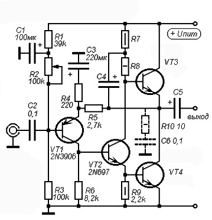

Простой транзисторный усилитель класса «А»
Эта схема (рис. 1) необычного усилителя разработана ещё в 1969 году английским инженером Джоном Линсли Худом и по сей день остаётся актуальной.

Рис. 1 - Схема простого транзисторного усилителя класса А
В отличие от усилителей на микросхемах, транзисторные усилители требуют тщательной настройки и подбора транзисторов. Эта схема – не исключение, хоть она и выглядит предельно простой. Транзистор VT1 – входной, структуры p-n-p (например, МП42, 2N3906, BC212, BC546, КТ361). Транзистор VT2 – структуры n-p-n, средней или малой мощности (КТ801, КТ630, КТ602, 2N697, BD139, 2SC5707, 2SD2165). Особое внимание стоит уделить выходным транзисторам VT3 и VT4, а точнее, их коэффициенту усиления. Сюда хорошо подходят КТ805, 2SC5200, 2N3055, 2SC5198. Нужно отобрать два одинаковых транзистора с как можно более близким коэффициентом усиления, при этом он должен более 120. Если коэффициент усиления выходных транзисторов меньше 120, значит в драйверный каскад (VT2) нужно поставить транзистор с большим усилением (300 и более).
Некоторые номиналы на схеме подбираются исходя из напряжения питания схемы и сопротивления нагрузки. Возможные варианты показаны в таблице 1.
Таблица 1
| Rн, Ом | R7, Ом | R8, Ом | С4, мкФ | С5, мкФ | Uпит, В | Iп, А | Uвх, В |
|---|---|---|---|---|---|---|---|
| 4 | 47 | 180 | 470 | 4700 | 18 | 2 | 0,4 |
| 8 | 100 | 560 | 220 | 2200 | 27 | 1,2 | 0,65 |
| 16 | 200 | 1200 | 220 | 2200 | 37 | 0.9 | 0,9 |
Не рекомендуется поднимать напряжение питания более 40 В, могут выйти из строя выходные транзисторы. Особенность усилителей класса А – большой ток покоя, и, следовательно, сильный разогрев транзисторов. При напряжении питания, например, 20 В и токе покоя 1,5 А усилитель потребляет 30 Вт, не зависимо от того, подаётся на его вход сигнал или нет. На каждом из выходных транзисторов при этом будет рассеиваться по 15 Вт тепла. Поэтому транзисторы VT3 и VT4 нужно установить на большой радиатор, используя термопасту.
Данный усилитель склонен в появлению самовозбуждений, поэтому на его выходе ставят цепь Цобеля: резистор сопротивлением 10 Ом и конденсатор 100 нФ, включенные последовательно между землёй и общей точкой выходных транзисторов (на рис. 1 эта цепь показана пунктиром).
При первом включении усилителя в разрыв его питающего провода нужно включить амперметр для контроля тока покоя. Пока выходные транзисторы не разогрелись до рабочей температуры, он может немного плавать, это вполне нормально. Также при первом включении нужно замерять напряжение между общей точкой выходных транзисторов (коллектор VT4 и эммитер VT3) и землёй, там должна быть половина питающего напряжения. Если напряжение отличается в большую или меньшую сторону, нужно покрутить подстроечный резистор R2.
В качестве входного следует поставить плёночный конденсатор ёмкостью 0,68 – 1 мкФ, иначе возможен нежелательный срез низких частот. Выходной конденсатор С5 стоит взять на напряжение не меньшее, чем напряжением питания.
Преимуществом схемы этого усилителя является то, что она не представляет опасности для динамиков акустической системы, ведь динамик подключается через разделительный конденсатор (С5), это значит, что при появлении на выходе постоянного напряжения, например, при выходе усилителя из строя, динамик останется цел, ведь конденсатор не пропустит постоянное напряжение.
Источники
sdelaysam-svoimirukami.ru - Простой транзисторный усилитель класса «А»